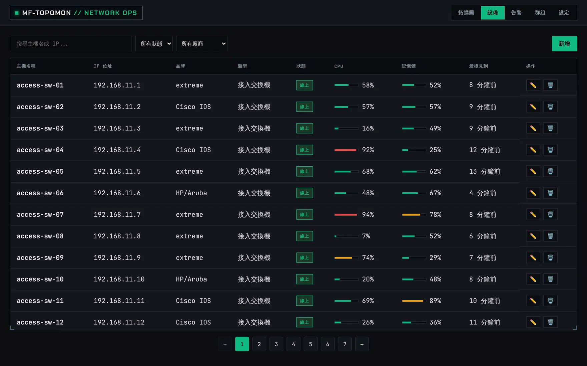
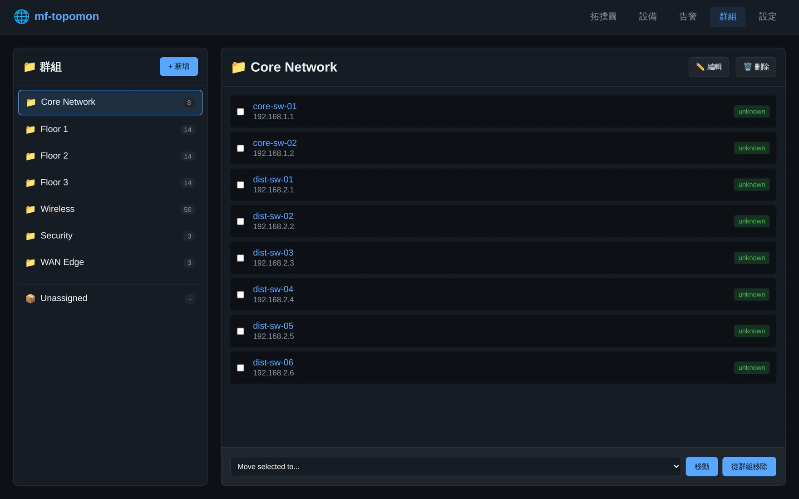
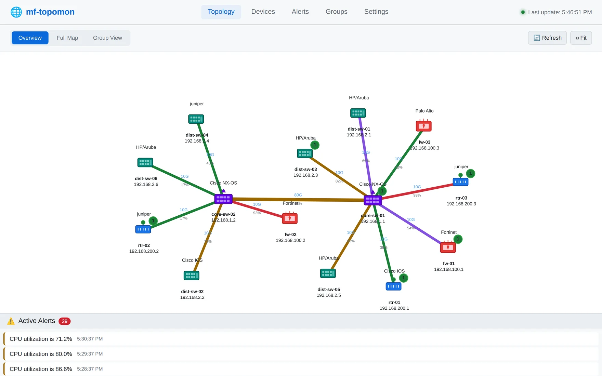

01
網路圖不用再手動維護
誰接誰是設備自己透過 LLDP／CDP 講出來的。有人移了一條線，下一輪盤點就反映在圖上，不必等誰想起來要更新文件。
02
設備端一行設定都不用加
用你本來就在用的管理位址與 community。連 SNMP trap 都不必在每台設備指定來源位址 —— 它認得設備自己回報的每一個位址。
03
線斷了，它先告訴你
不是「某台設備不見了」，而是「核心到三樓那條 10G 掉了」。收得到 trap 的話，是在事件發生的當下。
功能
一套工具，把「網路現在長什麼樣」這件事做完
從發現設備、畫出拓樸、逐線監看，到告警與抑制 —— 不需要再接三套東西。
自動發現
給它一台設備，它會順著 LLDP／CDP 鄰居一路長出整個網路；也可以讓它定期掃過你指定的網段。
一條線只畫一條
同一條實體線兩端都會報一次。系統用設備名把兩半配成一條，多條併接的線也會收成一條，圖上不會有重複。
逐條線路監看
每條線的 up／down、協商速率與雙向流量都看得到，使用率高的線在圖上就是另一個顏色。
可調的告警
使用率、CPU、記憶體、設備離線、線路斷線都有門檻，而且可以依設備套用不同的告警設定檔。
SNMP Trap
線路一斷，設備自己會通知 —— 畫面與告警在當下就更新，不必等下一輪輪詢。輪詢仍然會再確認一次。
不會為了一個掉包吵你
可以要求連續幾輪沒回應才算離線、一直跳動的線路把告警按住不反覆開關，以及讓 trap 等輪詢確認過再發。
分層與群組
核心、匯聚、接取自動分層；也可以自己開「三樓」「無線」「WAN 邊界」這種群組，只看自己負責的那一區。
多廠牌
Cisco、HP／Aruba、Fortinet、Palo Alto、Ruckus、Juniper 等等；廠牌自動辨識，不用一台一台告訴它這是什麼。
三語介面、深淺色主題
繁體中文、簡體中文與英文，整套介面都翻過；深色與淺色主題都可以用，跟著你的習慣走。
畫面
實際的介面
以下都是系統真實的畫面，資料為示範用的網路。
拓樸圖
節點是設備，線是真的接著的線。線上標著協商速率與目前使用率，顏色會隨著壓力改變；點一下任何一台設備，就只看它和它的鄰居。
設備清單
全部設備一頁看完：型號、廠牌、角色、CPU 與記憶體、最後一次回應是多久以前。可以搜尋與篩選，也可以直接在這裡新增。

告警中心
分成嚴重與警告，可以逐筆確認或一次全部確認。右邊是最近發生了什麼 —— 不用從頭翻日誌就知道這段時間網路過得好不好。

群組
按樓層、按角色、按負責的人分群都可以。拓樸圖也能切成群組視圖，大網路不會變成一團看不懂的毛線球。

它自己也看得見
收集器正在做什麼，不用去翻日誌：幾個行程在跑、多久回報一次、有幾台正在確認離線、哪幾條線被按住、收到多少 trap。監控系統最怕的是它自己悄悄停掉。

換個語言、換個主題
同一個畫面，淺色主題與英文介面。繁體中文、簡體中文、English 三種語言整套都翻過，不是只翻選單。

運作方式
它只做三件事
沒有代理程式要裝在設備上，也沒有設定檔要發下去。全部透過你已經在用的 SNMP。
1
問
定期問每台設備三件事：你的鄰居是誰、哪些埠上面有線、那些線跑了多少流量。
2
拼
同一條線兩端各報一次，用設備自己的名字把兩半拼成一條，畫成拓樸圖。
3
盯
用比較短的週期只盯那些有線的埠，狀態一變就告警；設備自己送來的 trap 會更快。
部署
一行裝完，之後都用同一個指令
一台乾淨的 Ubuntu 就夠。它會把需要的東西裝好、產生好密碼與憑證、把服務跑起來，然後把網址和帳密印給你。
# 在一台乾淨的 Ubuntu 上
curl -fsSL https://raw.githubusercontent.com/nox913106/net-lldp-topo/main/install.sh \
| sudo bash原始碼目前是私有的，安裝時要附上存取權杖；完整寫法在部署文件裡。
topomon health
一次檢查每一層：服務、代理、認證、資料庫、收集器。全部正常才算通過，可以直接接到監控上。
topomon update
更新到最新版並重新檢查。檢查沒過會自動退回更新前的版本，不會把你留在壞掉的狀態。
topomon backup
備份資料庫，舊的備份會自動輪替。需要的時候可以還原回去。
topomon logs
跟著看任何一個服務的日誌，查問題不用先去找檔案放在哪裡。
介面是有密碼的。對外只開反向代理，而且會轉到加密連線；應用程式與資料庫只在本機聽。連 API 的互動式文件頁都要登入 —— 因為從那裡可以直接操作整套系統。
支援範圍
它跟什麼東西講話
設備
- Cisco IOS／NX-OS
- HP ProCurve、Aruba
- Fortinet FortiGate
- Palo Alto Networks
- Ruckus（AP／SmartZone／Unleashed）
- Juniper、Extreme 等其他支援 LLDP 的設備
協定
- LLDP 為主，CDP 作為補充
- SNMP v1／v2c／v3（含加密與驗證）
- SNMP Trap（linkDown／linkUp）
- Log 可送到 Elasticsearch 或 Graylog
執行環境
- Ubuntu 22.04／24.04（或 Debian）
- Docker Compose，安裝腳本會自己裝
- 設備變多時，收集器可以多開幾個行程分攤
- 全程在你自己的機房，資料不離開